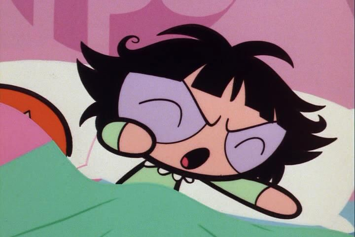

Sobre Bellota
Bellota es una de las tres Chicas Superpoderosas, junto con Bombón y Burbuja. Las creó el Profesor Utonio mezclando azúcar, flores y muchos colores... y por accidente, un poco de Sustancia X.
Viste de verde, tiene el cabello negro y corto, y es la más fuerte y valiente del grupo.

Características de Bellota
- Tiene superfuerza
- Vuela a gran velocidad
- Lanza rayos láser por los ojos
- Es la más valiente del grupo